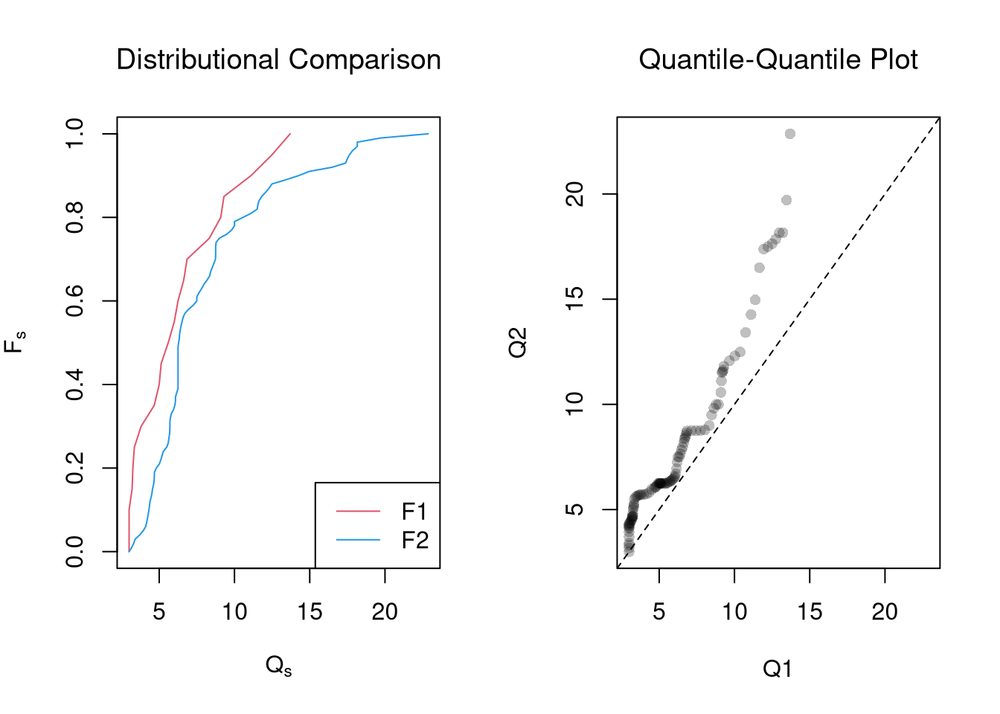
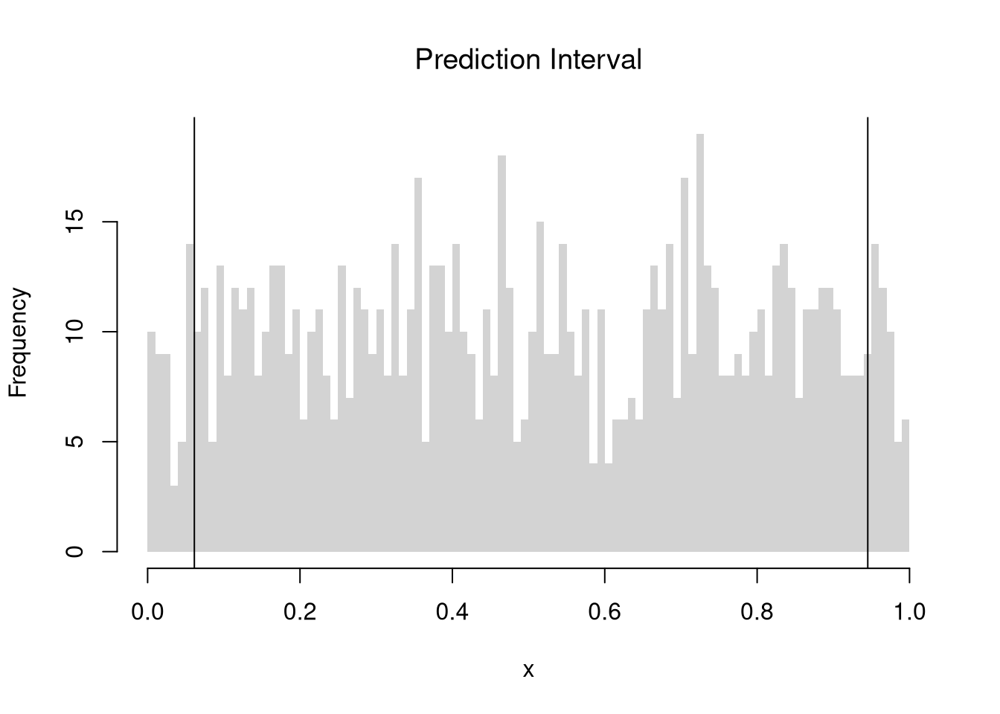

15 Misc. Topics
15.2 Nonparametric Tests
Distributional Comparisons.
We can also examine whether there are any differences between the entire distributions
Code
# Sample Wage Data
library(wooldridge)
x1 <- sort( wage1[wage1$educ == 15, 'wage'])
x2 <- sort( wage1[wage1$educ == 16, 'wage'] )
x <- sort(c(x1, x2))
# Compute Quantiles
quants <- seq(0,1,length.out=101)
Q1 <- quantile(x1, probs=quants)
Q2 <- quantile(x2, probs=quants)
# Compare Distributions via Quantiles
rx <- range(c(x1, x2))
par(mfrow=c(1,2))
plot(rx, c(0,1), type='n', font.main=1,
main='Distributional Comparison',
xlab=expression(Q[s]),
ylab=expression(F[s]))
lines(Q1, quants, col=2)
lines(Q2, quants, col=4)
legend('bottomright', col=c(2,4), lty=1,
legend=c('F1', 'F2'))
# Compare Quantiles
plot(Q1, Q2, xlim=rx, ylim=rx,
main='Quantile-Quantile Plot', font.main=1,
pch=16, col=grey(0,.25))
abline(a=0,b=1,lty=2)
The starting point for hypothesis testing is the Kolmogorov-Smirnov Statistic: the maximum absolute difference between two CDF’s over all sample data \(x \in \{X_1\} \cup \{X_2\}\). \[\begin{eqnarray} KS &=& \max_{x} |F_{1}(x)- F_{2}(x)|^{p}, \end{eqnarray}\] where \(p\) is an integer (typically 1).
An intuitive alternative is the Cramer-von Mises Statistic: the sum of absolute differences (raised to a power, typically 2) between two CDF’s. \[\begin{eqnarray} CVM=\sum_{x} |F_{1}(x)- F_{2}(x)|^{p}. \end{eqnarray}\]
Code
# Distributions
F1 <- ecdf(x1)(x)
F2 <- ecdf(x2)(x)
library(twosamples)
# Kolmogorov-Smirnov
KSq <- which.max(abs(F2 - F1))
KSqv <- round(twosamples::ks_stat(x1, x2),2)
# Cramer-von Mises Statistic (p=2)
CVMqv <- round(twosamples::cvm_stat(x1, x2, power=2), 2)
# Visualize Differences
plot(range(x), c(0,1), type="n", xlab='x', ylab='ECDF')
lines(x, F1, col=2, lwd=2)
lines(x, F2, col=4, lwd=2)
# CVM
segments(x, F1, x, F2, lwd=.5, col=grey(0,.2))
# KS
segments(x[KSq], F1[KSq], x[KSq], F2[KSq], lwd=1.5, col=grey(0,.75), lty=2)
Just as before, you use bootstrapping for hypothesis testing.
Comparing Multiple Groups.
For multiple groups, we can tests the equality of all distributions (whether at least one group is different). The Kruskal-Wallis test examines \[ H_0:\; F_1 = F_2 = \dots = F_G \quad\text{versus}\quad H_A:\; \text{at least one } F_g \text{ differs}, \] where \(F_g\) is the continuous distribution of group \(g\). This test does not tell us which group is different.
To conduct the test, first denote individuals \(i=1,...n\) with overall ranks \(r_1,....r_{n}\). Each individual belongs to group \(g=1,...G\), and each group \(g\) has \(n_{g}\) individuals with average rank \(\overline{r}_{g} = \sum_{i} r_{i} /n_{g}\). The Kruskal Wallis statistic is \[\begin{eqnarray} KW &=& (N-1) \frac{\sum_{g=1}^{G} n_{g}( \overline{r}_{g} - \overline{r} )^2 }{\sum_{i=1}^{N} ( r_{i} - \overline{r} )^2}, \end{eqnarray}\] where \(\overline{r} = \frac{N+1}{2}\) is the grand mean rank.
In the special case with only two groups, \(G=2\), the Kruskal Wallis test reduces to the Mann–Whitney U-test (also known as the ). In this case, we can write the hypotheses in terms of individual outcomes in each group, \(Y_i\) in one group \(Y_j\) in the other; \[ H_0: P(Y_i > Y_j)=P(Y_i > Y_i) \quad\text{versus}\quad H_A: P(Y_i > Y_j) \neq P(Y_i > Y_j) \] The corresponding test statistic is \[\begin{eqnarray} U &=& \min(U_1,U_2) \\ U_g &=& \sum_{i\in g}\sum_{j\in -g} \Bigl[\mathbf 1(Y_i > Y_j) + \tfrac12\mathbf 1(Y_i = Y_j)\Bigr]. \end{eqnarray}\]
Code
library(AER)
data(CASchools)
CASchools$stratio <- CASchools$students/CASchools$teachers
# Do student/teacher ratio differ for at least 1 county?
# Single test of multiple distributions
kruskal.test(CASchools$stratio, CASchools$county)
##
## Kruskal-Wallis rank sum test
##
## data: CASchools$stratio and CASchools$county
## Kruskal-Wallis chi-squared = 161.18, df = 44, p-value = 2.831e-15
# Multiple pairwise tests
# pairwise.wilcox.test(CASchools$stratio, CASchools$county)15.3 Prediction
Prediction Intervals.
In addition to confidence intervals, we can also compute a prediction interval which estimate the variability of new data rather than a statistic
In this example, we consider a single variable and compute the frequency each value was covered.
Code

Code
In this example, we consider a range for \(y_{i}(x)\) rather than for \(m(x)\). These intervals also take into account the residuals — the variability of individuals around the mean.
Code
For a nice overview of different types of intervals, see https://www.jstor.org/stable/2685212. For an in-depth view, see “Statistical Intervals: A Guide for Practitioners and Researchers” or “Statistical Tolerance Regions: Theory, Applications, and Computation”. See https://robjhyndman.com/hyndsight/intervals/ for constructing intervals for future observations in a time-series context. See Davison and Hinkley, chapters 5 and 6 (also Efron and Tibshirani, or Wehrens et al.)
Code
boot_regs <- lapply(1:399, function(b){
b_id <- sample( nrow(xy), replace=T)
xy_b <- xy[b_id,]
reg_b <- lm(y~x, dat=xy_b)
})
plot(y~x, pch=16, col=grey(0,.5),
dat=xy0, ylim=c(0, 20))
lines(X0, preds_lo,
col=hcl.colors(3,alpha=.75)[2],
type='o', pch=2)
# Estimate Residuals CI at design points
res_lo <- sapply(1:nrow(xy), function(i){
y_i <- xy[i,'y']
preds_i <- jack_lo[,i]
resids_i <- y_i - preds_i
})
res_cb <- apply(res_lo, 1, quantile,
probs=c(.025,.975), na.rm=T)
# Plot
lines( X0, preds_lo +res_cb[1,],
col=hcl.colors(3,alpha=.75)[2], lt=2)
lines( X0, preds_lo +res_cb[2,],
col=hcl.colors(3,alpha=.75)[2], lty=2)
# Smooth estimates
res_lo <- lapply(1:nrow(xy), function(i){
y_i <- xy[i,'y']
x_i <- xy[i,'x']
preds_i <- jack_lo[,i]
resids_i <- y_i - preds_i
cbind(e=resids_i, x=x_i)
})
res_lo <- as.data.frame(do.call(rbind, res_lo))
res_fun <- function(x0, h, res_lo){
# Assign equal weight to observations within h distance to x0
# 0 weight for all other observations
ki <- dunif(res_lo$x, x0-h, x0+h)
ei <- res_lo[ki!=0,'e']
res_i <- quantile(ei, probs=c(.025,.975), na.rm=T)
}
X0 <- sort(unique(xy$x))
res_lo2 <- sapply(X0, res_fun, h=15, res_lo=res_lo)
lines( X0, preds_lo +res_lo2[1,],
col=hcl.colors(3,alpha=.75)[2], lty=1, lwd=2)
lines( X0, preds_lo +res_lo2[2,],
col=hcl.colors(3,alpha=.75)[2], lty=1, lwd=2)
Code
# Bootstrap Prediction Interval
boot_resids <- lapply(boot_regs, function(reg_b){
e_b <- resid(reg_b)
x_b <- reg_b$model$x
res_b <- cbind(e_b, x_b)
})
boot_resids <- as.data.frame(do.call(rbind, boot_resids))
# Homoskedastic
ehat <- quantile(boot_resids$e_b, probs=c(.025, .975))
x <- quantile(xy$x,probs=seq(0,1,by=.1))
boot_pi <- coef(reg)[1] + x*coef(reg)['x']
boot_pi <- cbind(boot_pi + ehat[1], boot_pi + ehat[2])
# Plot Bootstrap PI
plot(y~x, dat=xy, pch=16, main='Prediction Intervals',
ylim=c(-5,20), font.main=1)
polygon( c(x, rev(x)), c(boot_pi[,1], rev(boot_pi[,2])),
col=grey(0,.2), border=NA)
# Parametric PI (For Comparison)
#pi <- predict(reg, interval='prediction', newdata=data.frame(x))
#lines( x, pi[,'lwr'], lty=2)
#lines( x, pi[,'upr'], lty=2)